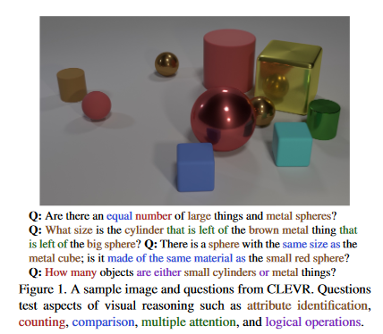

Deep Neural Networks as a Building Block
Deep Neural Networks have transformed dealing with unstructured data like images and text, making totally new things possible. However they are difficult to train, require a large amount of relevant training data, are hard to interpret, hard to debug and hard to refine. I think for these reasons there’s a lot of space to use neural networks as a building block for extracting structured data for less parameterised models.
Josh Tenenbaum gave an excellent keynote at ACL 2020 titled Cognitive and computational building blocks for more human-like language in machines. He talked about understanding how humans grasp meaning through language by combining statistical language models (currently deep neural networks), grounding in perception and action (through physical and social models) and semantic parsing (to extract meaning from the sentences).
A series of papers he talked about is on CLEVR, a dataset with images of objects and questions like “What size is the cylinder that is on the left of the brown metal thing that is left of the big sphere”. To solve these kinds of problems in a paper Neural Symbolic VQA they extract the objects from an image with CNNs and parse the question with LSTMs and bring them together to form a program that they execute to answer the question. The Neuro-Symbolic Question Learner creates a variant of this approach that doesn’t require explicit supervision (building the intermediate representations), but still extracts features from the image and parses a semantic representation of the question text.

In general neural networks do amazingly well at detecting and identifying objects in images (e.g. YoLo) and at syntactic parsing of sentences (e.g. as in stanza). But while neural networks are powerful their failure modes can be hard to understand and debug, even with all the work on attention and explainability toolkits. Putting a classical linear model or decision tree on top of features extracted with a neural network could give a simple model with more control and interpretability.
Another issue is if you’re dealing with a very different sort of task (so you can’t just apply transfer learning) the amount of data for an end-to-end neural model is huge. However you could use a more tailored model, such as a Bayesian model, on top of features extracted by a neural network to make better use of the training data available.
There are definitely some questions about what the effective ways to extract this information are for a usecase; whether lists of categorical objects or a vector embedding. And how to determine when you’re better off writing custom components rather than trying to train a high parameter model like a neural network. But I think there’s a lot of potential in the space of building more traditional machine learning models on features extracted from neural networks. An example of this is extracting text from the dependency parse.